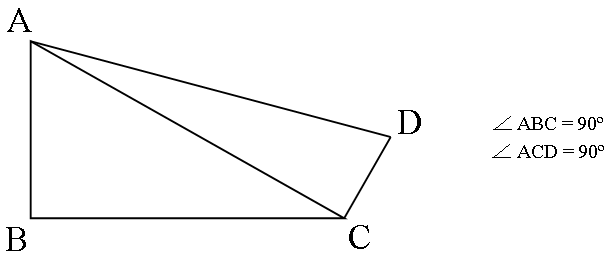

Завдання#
Узагальнене формулювання завдання до лабораторної роботи#
Завдання складається з двох частин:
створити програму, використовуючи для реалізації не менше двох функцій;
створити програму з використанням рекурсії.
Постановка першого завдання#
Програма повинна задовольняти такі вимоги:
Масиви можна генерувати автоматично, якщо інше не обумовлено в завданні. Решту вихідної інформації потрібно уводити з клавіатури на запит.
Працювати потрібно тільки через указівники та функції.
Усі значення функціям потрібно передавати як параметри.
На екрані обов’язково повинні зберігатися як вихідна інформація, так і результат.
Алгоритми пошуку та сортування масиву (потрібні для окремих завдань) наведено в додатку Г.
Постановка другого завдання#
Виконуючи це завдання, потрібно скласти алгоритми та програми з використанням рекурсії відповідно до варіанту завдання. При цьому потрібно враховувати граничні умови виходу з рекурсії.
Варіанти завдань до лабораторної роботи#
Програма з використанням не менше двох функцій#
Варіант №1#
Дано дві квадратні дійсні матриці 4-го порядку. Надрукувати квадрат тієї з них, в якій найменший слід (сума діагональних елементів), вважаючи, що така матриця одна.
Варіант №2#
Увести задане число слів із клавіатури. Виконати виведення на екран уведеного символьного масиву. Здійснити сортування слів за зростанням кількості символів. Реалізувати виведення на екран одержаного масиву.
Варіант №3#
Написати функцію, яка обчислює для заданої квадратної матриці \(A\) її симетричну частину \(s_{ij}=\frac{a_{ij}+a_{ji}}{2}\) і кососиметричну частину \(k_{ij} = \frac{a_{ij}-a_{ji}}{2}\).
Варіант №4#
Написати функції, які виконують такі математичні операції:
округлення дійсного числа до значення з заданою точністю;
визначення послідовності чисел, що ділять задане число націло.
Варіант №5#
Дано три квадратних матриці \(A\), \(B\), \(C\) 4-го порядку. Надрукувати ту з них, норма якої найменша. Пояснення. Нормою матриці назвемо максимум з абсолютних величин її елементів.
Варіант №6#
Увести задану кількість чисел із клавіатури. Розділити уведену послідовність на два масиви меншого розміру:
у першому масиві міститимуться числа, що перевищують середнє арифметичне всієї числової послідовності;
інші числа повинно бути записано в другий масив.
Результати вивести на екран.
Варіант №7#
Написати функцію, яка замінює від’ємні елементи лінійного масиву їх модулями, не користуючись стандартною функцією обчислення модуля. Підрахувати кількість проведених замін.
Варіант №8#
Написати функцію, яка в заданому рядку видаляє всі пробіли й знаки припинання {.,;:!?}. Застосувати її для трьох заданих рядків (рядки вводяться з клавіатури).
Варіант №9#
Написати функцію інвертування набору символів (заміни порядку їх слідування на протилежний). Вивести нову послідовність на екран.
Варіант №10#
Підрахувати число точок, розташованих усередині кола радіусом \(r\) із центром у початку координат. Координати задано масивами X[10] та Y[10]. Відстань точки від початку координат обчислювати у функції.
Варіант №11#
Перетворити декілька масивів, розташувавши в них поспіль тільки додатні елементи, записавши замість інших елементів нулі. Вивести масиви на екран до та після перетворення.
Варіант №12#
Написати функцію, яка виводитиме матрицю на екран, виділяючи локальні мінімуми матриці червоним кольором. Локальний мінімум — це елемент матриці, менший від усіх своїх сусідів. Крайні рядки та стовпці не розглядаються. Розглядати сусідів тільки згори-знизу та зліва-справа.
Варіант №13#
Переписати додатні елементи трьох масивів різної довжини в четвертий масив поспіль. Вивести всі чотири масиви на екран.
Варіант №14#
Обчислити за допомогою функції кількість додатних, від’ємних і нульових елементів різних матриць.
Варіант №15#
Написати функцію, яка здійснює циклічний зсув на k елементів для кожного рядка матриці. Використати її для матриць різного розміру і різних k.
Варіант №16#
Обчислити середнє арифметичне додатних елементів для масивів a(n1), b(n2), c(n3), де n1 < 30, n2 < 30, n3 < 30.
Варіант №17#
Знайти для двох масивів різного розміру найбільші їхні елементи та порядкові номери цих елементів. Поміняти знайдені елементи місцями. Вивести на екран масиви до та після обміну.
Варіант №18#
Написати функцію, яка у квадратній матриці зсуває крайні елементи за кільцем, тобто, перший рядок заміщає останній стовпець, останній стовпець — останній рядок, останній рядок — перший стовпець, а перший стовпець — перший рядок.
Варіант №19#
Знайти периметр фігури \(ABCD\) (рисунок 4.3) за заданими сторонами \(AB\), \(AC\) і \(DC\). Написати функцію для розрахунку гіпотенузи прямокутного трикутника за його катетами.

Рисунок 4.3 – Ілюстрація до варіанта №19
Варіант №20#
Дано натуральне число \(n\) та цілі числа \(a_1,a_2,\ldots,a_n\). Знайти кількість чисел \(a_i,~i=1,\ldots,n\), що є повними квадратами. Написати функцію, яка дає можливість розпізнавати повні квадрати.
Варіант №21#
Написати функцію для обчислення суми факторіалів всіх непарних чисел від 1 до 9.
Варіант №22#
Написати функцію StrType(s), яка визначає тип рядка s (можливі типи − рядок букв, десяткове число, 16-ковий число, двійкове число і т.д.)
Варіант №23#
Три прямі на площині задані рівняннями \(a_kx+b_ky=c_k\), \(k = 1,2,3\). Якщо ці прямі попарно перетинаються і утворюють трикутник, тоді знайти його площу. Застосовувати функції.
Варіант №24#
Магічним квадратом порядку n називається квадратна матриця розміром n x n, що складається з чисел \(1, 2, \ldots, n^2\) так, що суми по кожному стовпцю, кожному рядку і кожній з двох діагоналей рівні між собою. Написати функцію генерації магічного квадрату третього порядку (у якого по три стовпці і рядки). Можна скористатися тим фактом, що число (вираз), що стоїть на перетині його діагоналей, завжди дорівнює \(\frac{1}{3}\) магічної константи, яка обчислюється за такою формулою: \(\frac{n*(n2+1)}{2}\). Для матриці 3х3 це число дорівнює 15. Будувати будь-який непарний квадрат потрібно починати з центральної комірки верхнього рядку, в яку записати 1.
Варіант №25#
Два натуральних числа називаються “дружніми”, якщо кожне з них дорівнює сумі всіх дільників іншого, за винятком його самого (такі, наприклад, числа 220 і 284). Вивести на монітор все пари “дружніх” чисел, що не перевершують заданого натурального числа. Застосовувати функції.
Варіант №26#
Написати функцію P(X,Y), яка для одновимірного масиву X створює масив Y за таким правилом: припустимо m — найбільший елемент серед x[i].
Тоді \(y_i=x_i^2\), якщо \(x_i<m/2\) і \(y_i=0\) інакше.
Варіант №27#
Написати функцію P(X,Y), яка для даного масиву X створює масив Y за таким правилом: \(y_i = x_i - m\), де m – середнє арифметичне елементів масиву X.
Варіант №28#
Визначити \(Z=(x_1+y_1)/(x_2-y_1)\), де \(x_1\) і \(x_2\) корені рівняння \(2x^2+x-4=0\); \(y_1\) і \(y_2\) − корені рівняння \(2y^2+2y-1=0\). Написати функцію обчислення коренів рівняння.
Варіант №29#
Увести координати вершин трьох трикутників. Визначити трикутник з меншою площею. Застосовувати функції.
Варіант №30#
Два простих числа називаються «близнюками», якщо вони відрізняються одне від одного на 2 (наприклад, числа 41 і 43). Знайти всі пари «близнюків» із відрізка [n, 2n], де n — задане ціле число, більше 2. Застосовувати функції.
Програма з використанням рекурсії#
Варіант №1#
Дано послідовність ненульових цілих чисел, ознакою кінця якої служить 0. Використовуючи рекурсію, надрукувати спочатку всі від’ємні, а потім — усі додатні числа послідовності.
Варіант №2#
Знайти перші n чисел Фібоначчі двома способами: за допомогою рекурсії та за допомогою ітерації. Порівняти ефективність алгоритмів. Числа Фібоначчі обчислюють наступним чином:
\(F(0)=1,~F(1)=2,~F(n)=F(n-2)+F(n-1)\).
Варіант №3#
Написати функцію додавання двох чисел, використовуючи тільки операцію додавання одиниці.
Варіант №4#
Написати рекурсивну функцію, яка обчислює довжину рядка.
Варіант №5#
Написати рекурсивну функцію:
обчислення суми цифр натурального числа;
обчислення кількості цифр натурального числа.
При вирішенні цього завдання не можна використовувати рядки, списки, масиви (ну і цикли, зрозуміло).
Варіант №6#
Дано — перший член і різницю арифметичної прогресії. Написати рекурсивну функцію для знаходження:
n-го члена прогресії;
суми n перших членів прогресії.
Варіант №7#
Задано набір слів. Побудувати з них будь-який ланцюжок таким чином, щоб символ наприкінці слова збігався з символом на початку наступного слова.
Варіант №8#
Написати рекурсивну процедуру переведення натурального числа з десяткової системи числення у двійкову.
Варіант №9#
Написати рекурсивну функцію, яка визначає, чи є симетричною частина рядка, починаючи з i-го елемента та закінчуючи j-м.
Варіант №10#
Дано цілі числа m і n, де \(0\le m\le n\). Написати рекурсивну функцію C(m, n) для обчислення біноміальних коефіцієнтів, тобто числа сполучень за формулою: \(C_n^0=C_n^n=1,~C_n^m=C_{n-1}^m+C_{n-1}^{m-1}\).
Варіант №11#
Написати функцію множення двох чисел, використовуючи тільки операцію додавання.
Варіант №12#
Знайти найбільший спільний дільник двох натуральних чисел.
Варіант №13#
Надрукувати послідовність чисел, ознакою кінця якої є 0, у зворотному порядку.
Варіант №14#
Написати рекурсивну функцію знаходження цифрового кореня натурального числа. Цифровий корінь натурального числа отримують у такий спосіб. Якщо скласти всі цифри цього числа, потім все цифри знайденої суми і повторювати цей процес, то в результаті буде отримано однозначне число (цифра), яка і називається цифровим коренем даного числа.
Варіант №15#
Дано вектор X із n дійсних чисел. Знайти мінімальний елемент вектора, використовуючи допоміжну рекурсивную функцію, яка знаходить мінімум серед останніх елементів вектора X, починаючи з i-го.
Варіант №16#
Перевірити, чи є фрагмент рядка з i-го по j-й символ паліндромом.
Варіант №17#
Дано послідовність додатних чисел, ознакою кінця якої служить від’ємне число. Використовуючи рекурсію, підрахувати кількість чисел та їх суму.
Варіант №18#
Шляхом розподілу відрізка навпіл знайти з точністю 0,0001 корінь рівняння \(\cos(\frac{2}{x})-2\sin(\frac{1}{x})+\frac{1}{x}=0\).
Варіант №19#
Дано натуральне число n. Виведіть слово YES, якщо число n є точним ступенем двійки, або слово NO в іншому випадку. Операцією зведення в ступінь користуватися не можна!
Зробити 2 варіанти: а) через рекурсію; б) звичайною функцією.
Варіант №20#
Увести з клавіатури ціле число n. Використовуючи рекурсію, роздрукувати спочатку послідовність, що складається з n літер 'А', а потім з n літер 'B'.
Варіант №21#
Дано натуральне число n. Виведіть всі його цифри по одній, в зворотньому порядку, розділяючи їх пробілами або новими рядками.
При вирішенні цього завдання не можна використовувати рядки, списки, масиви (ну і цикли, зрозуміло). Дозволена тільки рекурсія і цілочисельна арифметика.
Варіант №22#
Дана послідовність натуральних чисел (одне число в рядку), що завершується числом 0. Виведіть всі непарні числа з цієї послідовності, зберігаючи їх порядок.
Не можна використовувати глобальні змінні і передавати будь-які параметри в рекурсивную функцію. Функція отримує дані, зчитуючи їх з клавіатури. Функція не повертає значення, а відразу ж виводить результат на екран. Основна програма повинна складатися тільки з виклику цієї функції.
Варіант №23#
Дана послідовність натуральних чисел (одне число в рядку), що завершується числом 0. Виведіть перше, третє, п’яте і т.д. з введених чисел (члени послідовності з непарними номерами). Завершальний нуль виводити не треба.
Не можна використовувати глобальні змінні і передавати будь-які параметри в рекурсивную функцію. Функція отримує дані, зчитуючи їх з клавіатури. Функція не повертає значення, а відразу ж виводить результат на екран. Основна програма повинна складатися тільки з виклику цієї функції.
Варіант №24#
Дана послідовність натуральних чисел (одне число в рядку), що завершується двома числами 0 поспіль. Визначте, скільки разів в цій послідовності зустрічається число 1. Числа, що йдуть після двох нулів, необхідно ігнорувати.
Не можна використовувати глобальні змінні і параметри, що передаються в функцію. Функція отримує дані, зчитуючи їх з клавіатури, а не отримуючи їх у вигляді параметрів.
Варіант №25#
Написати рекурсивну функцію, що визначає, чи є задане натуральне число простим.
Варіант №26#
Дано n різних натуральних чисел (n=5). Знайти всі перестановки цих чисел.
Варіант №27#
Описати рекурсивну функцію AllDigits(s), яка підраховує суму цифр у рядочку s.
Варіант №28#
Написати рекурсивну функцію, яка перевіряє правильність розстановки дужок в рядку. При правильній розстановці виконуються умови:
кількість відкриваючих і закриваючих дужок однакова.
всередині будь-якої пари відкриваюча - відповідна закриваюча дужка, дужки розставлені правильно.
Приклади неправильної розстановки:) (, ()) (, ()) (() і т.п.
Варіант №29#
У рядку можуть бути присутніми дужки як круглі, так і квадратні. Кожній відкриваючий дужці відповідає закриваюча того ж типу (круглій — кругла, квадратній — квадратна). Написати рекурсивну функцію, яка перевіряє правильність розстановки дужок в цьому випадку.
Приклад неправильної розстановки: ( [ ) ].
Варіант №30#
Знайти НСД методом Евкліда. Використовувати рекурсивну функцію.